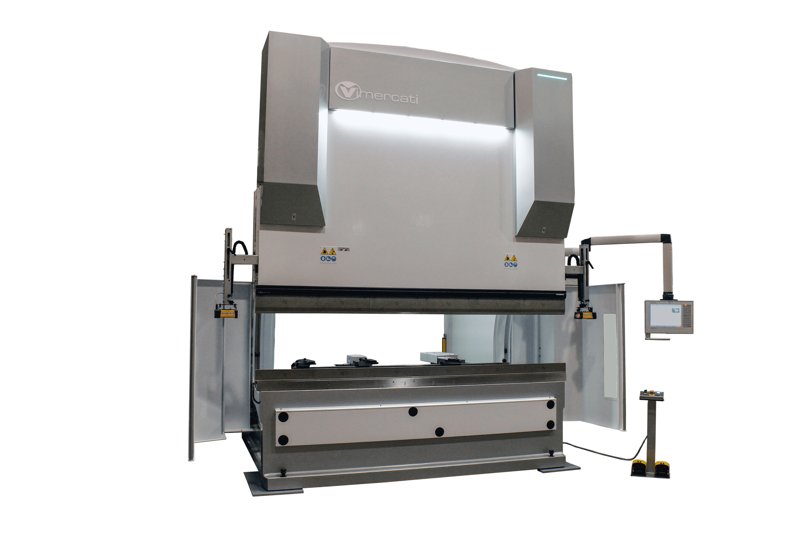
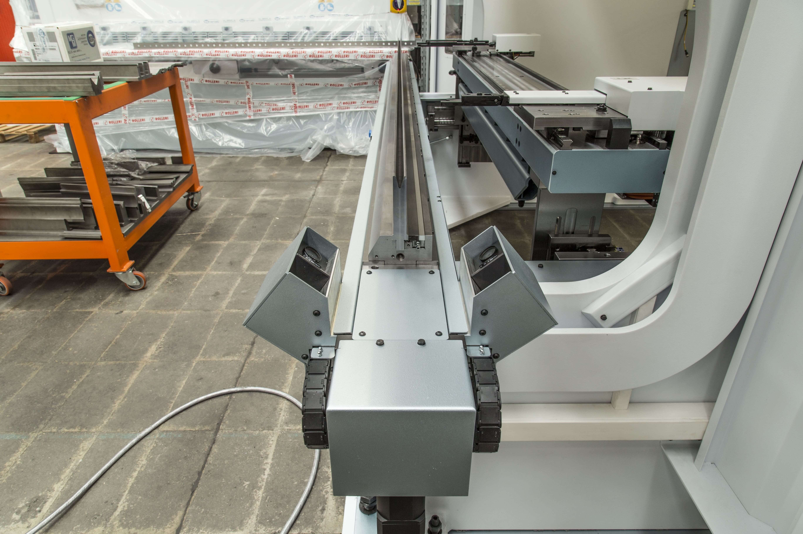
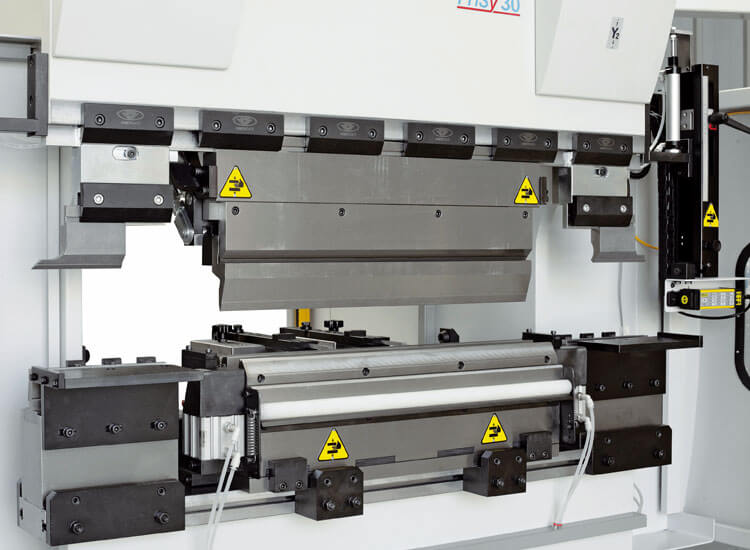

Для высокоточной гибки листовых заготовок любой сложности.
Гидравлические листогибы Vimercati

Листогиб, который сочетает в себе прочность, надежность и точность
Технологически совершенные и высокогибкие машины: мы изучаем индивидуальные решения в соответствии с конкретными требованиями к продукции наших клиентов. Ассортимент нашей продукции состоит из машин, которые идут от самых маленьких — от 30 тонн х 1250 мм до мощных индустриальных гигантов 600 тонн х 6260 мм.
Рамные стойки машины изготовлены из цельного металлического листа (материал, сертифицированный по стандарту S355J2 + N) и разрезаются в одном и том же направлении обработки, чтобы гарантировать однородное поведение конструкции. Рама машины собирается и сваривается в специализированном столярном подразделении. Все контактные поверхности фрезеруются перед сваркой для идеального контакта, что обеспечивает высококачественную структуру: жесткую, точную и полностью свободную от внутренних напряжений.
Все компоненты полностью изготовлены на заводе, оснащенном станками последнего поколения, которые постоянно обновляются. Все механические узлы, электрические и гидравлические системы состоят только из материалов и компонентов мирового класса от ведущих европейских брендов.
С полной информацией о моделях и технических характеристиках можно ознакомиться, загрузив официальный проспект (PDF).

Широкий выбор опций для автоматизации:
- Гибочный инструмент для плющения: Пневматический инструмент для качественного «сжимания» (плющения) предварительного сгиба.
- Регулируемое положение пульта управления: Свободное перемещение стойки пульта ЧПУ по всей рабочей длине пресса.
- Угловая измерительная система Data-M: Автоматический лазерный контроль и корректировка угла гиба в реальном времени.
- Держатель инструмента с увеличенной высотой: Повышенная высота крепления пуансонов для удобного изготовления глубоких коробок.
- Различные конфигурации задних упоров: Сложные многоосевые системы (оси Z1-Z2-Z3-Z4, X1-X2-Z1-Z2-R1-R2 или X-R-XRel-Z1-Z2).
- LED-панель для инструмента: Светодиодная интеллектуальная индикация для быстрой и безошибочной смены инструмента.

Дополнительные возможности комплектации:
- Механизированные фронтальные опоры: Передние стойки поддержки листа под управлением системы ЧПУ, полностью синхронизированные с ходом осей Y1-Y2 и оснащенные вертикальной регулировкой.
- Индивидуальный размер хода: Увеличенный ход гидроцилиндров и расстояние между столом и пуансоном (просвет под индивидуальный заказ).
- Изготовление дверного профиля: Специализированная гибка сложных профилей стальных дверей по чертежам заказчика. Смотреть видео процесса.
- Индивидуальный размер зазора: Настраиваемый зев (зазор) в боковых стойках рамы пресса увеличен до 1000 мм.
- Дополнительные пальцы заднего упора: Пальцы упоров различной геометрии с закаленной износостойкой рабочей частью.
- Расширитель упоров: Удлинители упорных пальцев с ручным или автоматическим ЧПУ-перемещением.
Запрос технико-коммерческого предложения
Нажмите на кнопку ниже, чтобы мгновенно перейти в чат мессенджера WhatsApp. Вы можете напрямую отправить инженеру чертежи деталей, указать требуемое усилие пресса, длину гиба и толщину обрабатываемого металла для оперативного расчета стоимости.